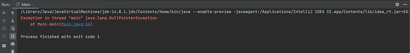
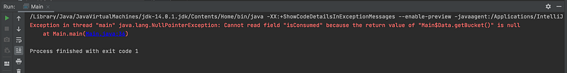

Java is the pioneer programming language that ruled the market from last 20 years and performing well.
There is a controversial debate going on finding the replacement of ‘ Java ’ from last few years.
Now a days, developers started complaining about the out of date programming syntax in comparison with the modern programming languages like Python, Kotlin, Swift etc
But the recent updates in Java has enhanced the code quality and provided the developers to play around with the program in a much more efficient manner.
Following are the suggested features you can use with JDK 14 if you want to develop much more scalable, concise and syntactically beautiful programs in Java.
1. Try-with-resource statement
Handling exceptions using try-catch block mostly requires final block to add the cleanup code. Now using try with resource block, developers can handle exceptions like pro.
We can add the resources within try paranthesis in order to close or clean up that resource after the execution of try-catch block
Old Syntax
Scanner scanner = null;
try {
scanner = new Scanner(new File("foo.txt"));
while (scanner.hasNext()) {
System.out.println(scanner.nextLine());
}
} catch (FileNotFoundException e) {
e.printStackTrace();
} finally {
if (scanner != null) scanner.close();
}
New Syntax
try (Scanner scanner = new Scanner(new File("foo.txt"))) {
while (scanner.hasNext()) {
System.out.println(scanner.nextLine());
}
} catch (FileNotFoundException e) {
e.printStackTrace();
}This will significantly reduce the line of code which we need to add as cleanup code for closing streams or db connection and will reduces the chances of errors occuring due to non closed streams/connections
2. Switch expressions
Developers often encounter a scenario where a value is required to be returned from conditional block. But old syntax does not provide any help for the same.
Old syntax
private String getUserRole(User user){String userRole = "";
switch(user.getRole()){
case 0:
userRole = "Customer";
break;
case 1:
userRole = "Editor";
break;
case 2:
userRole = "Admin";
break;
default: throw new IllegalStateException("Unexpected value: " + user.getRole());
}
return userRole;
}
Just like modern languages such as Swift, Java SE 12 introduced switch expressions which enables you to return values on the basis of conditions.
New syntax
private String getUserRoleV2(User user){
return switch(user.getRole()){
case 0 -> "Customer";
case 1 -> "Editor";
case 2 :
// for multi line expression use 'yield' keyword
user.setRights(AuthRights.absolute);
yield "Admin"; default -> throw new IllegalStateException("Unexpected value: " + user.getRole());
};
}This reduce the LOC (lines of code) significantly in the project and make the modification relatively easier.
3. Intializing with ‘ var ’
Java is type strict language by nature. Liking such a strictly typed language is a question of developer’s preference. But to support the situations where type inference can deduce the complexity of code, Java SE 10 came up with the support of type inference for local variables.
private void init(){var str = "Java 10"; // infers String
var list = new ArrayList<String>();
var stream = list.stream(); // infers Stream<String>
}
Java is still a statically typed language so type is inferred only when enough information is available for initialization. Hence, initialization with var is legal if the variable satisfy the following conditions:
- It should be a local variable only (neither a class member nor a function argument)
- It should be defined as soon as it is declared
4. Records
One of the most common complaints about Java is that you need to write a lot of code for a class to be useful such as toString() or equals(). This looks verbose and outdated hence, Java14 came up with records which makes type declaration concise and is very useful when we need to bind multiple logically linked values under a class name.
Here is an example by one of the blogs on oracle’s website that demonstrate the advantage of using records
var order = new FXOrderClassic(1,
CurrencyPair.GBPUSD,
Side.Bid, 1.25,
LocalDateTime.now(),
1000);
Invocation of a standard object like this required defining the type FXOrderClassic which can be implemented in the following manner
Old syntax
public final class FXOrderClassic {
private final int units;
private final CurrencyPair pair;
private final Side side;
private final double price;
private final LocalDateTime sentAt;
private final int ttl;
public FXOrderClassic(int units,
CurrencyPair pair,
Side side,
double price,
LocalDateTime sentAt,
int ttl) {
this.units = units;
this.pair = pair; // CurrencyPair is a simple enum
this.side = side; // Side is a simple enum
this.price = price;
this.sentAt = sentAt;
this.ttl = ttl;
}
public int units() {
return units;
}
public CurrencyPair pair() {
return pair;
}
public Side side() {
return side;
}
public double price() { return price; }
public LocalDateTime sentAt() {
return sentAt;
}
public int ttl() {
return ttl;
}
@Override
public boolean equals(Object o) {
if (this == o) return true;
if (o == null || getClass() != o.getClass())
return false;
FXOrderClassic that = (FXOrderClassic) o;
if (units != that.units) return false;
if (Double.compare(that.price, price) != 0)
return false;
if (ttl != that.ttl) return false;
if (pair != that.pair) return false;
if (side != that.side) return false;
return sentAt != null ?
sentAt.equals(that.sentAt) : that.sentAt == null;
}
@Override
public int hashCode() {
int result;
long temp;
result = units;
result = 31 * result +
(pair != null ? pair.hashCode() : 0);
result = 31 * result +
(side != null ? side.hashCode() : 0);
temp = Double.doubleToLongBits(price);
result = 31 * result +
(int) (temp ^ (temp >>> 32));
result = 31 * result +
(sentAt != null ? sentAt.hashCode() : 0);
result = 31 * result + ttl;
return result;
}
@Override
public String toString() {
return "FXOrderClassic{" +
"units=" + units +
", pair=" + pair +
", side=" + side +
", price=" + price +
", sentAt=" + sentAt +
", ttl=" + ttl +
'}';
}
}New Syntax
public record FXOrder(int units,
CurrencyPair pair,
Side side,
double price,
LocalDateTime sentAt,
int ttl) {}5. Enhanced ‘ instance of ’
Java 14 introduced a featured named as ‘ Pattern matching for instance of ’ which means that explicit typecasting is no more required while checking the type using instance of.
Old syntax
private Entries getEntries(User user){ if (user instanceof Editor) {
Editor editor = (Editor) user;
// use editor specific methods
var entries = editor.getEntries();
return entries;
}
return null;
}New syntax
private Entries getEntries(User user){
if (user instanceof Editor editor) {
// use group specific methods
var entries = editor.getEntries();
return entries;
}
return null;
}6. Text Blocks
There is nothing new about having this feature in a programming language but is a much awaited feature in Java. Java devs always crave for printing multiline string literals in a simpler manner without using nasty concatenations. Java now support multiline string literals by preserving the structure of the string as written.
Old syntax
String html = "<HTML>" +
"\n\t" + "<BODY>" +
"\n\t\t" + "<H2>\"Hurray! Java 14 is here\"</H2>" +
"\n\t" + "</BODY>" +
"\n" + "</HTML>";Using of triple quotes , you can utilise this feature which can be very handy in using a structured string such as writing a file with certain alignment and spacing or adding a multiline html block
New syntax
String html = """
<HTML>
<BODY>
<H2>"Hurray! Java 14 is here"</H2>
</BODY>
</HTML>
""";7. Meaningful NPE messages
Null pointer exceptions (NPE) has always been nightmare for Java developers and are the most frequent issues that developers encounter. But sometime NPE messages does not provide enough information about the problem.
var task = new Task();
final boolean isDataConsumed = task.getData().getBucket().isConsumed;
In the code snippet, there can be multiple point of failures such as
- getData() returns a null value
- getBucket() returns a null value
Following NPE message doesnot provide enough detail about the issue

In order to encounter this issue, Oracle decided to add an enhancement JEP 358 ie. Helpful NullPointExceptions in which Oracle states in its documentation that
Improve the usability ofNullPointerExceptions generated by the JVM by describing precisely which variable wasnull
You can utilize this feature by adding a flag in java command
-XX:+ShowCodeDetailsInExceptionMessages
Using the flag, JVM will provide much more meaningful messages mentioned below through which you can track the exact point of failure

Conclusion
Java 14 is equipped with much more enhancements to offer for a smooth development experience such as default CDS archives from Java 12 onwards and Shenandoah : a low pause time GC and much more
“ Oracle is rolling out the new JDK versions on regular intervals to make sure that Java remains unbeatable. Considering such frequent enhancements from last few years in Java. There is no point of discussing about the future of this language. Java is still used in some projects where you cannot find any better alternative and will remain in market for upcoming years. “